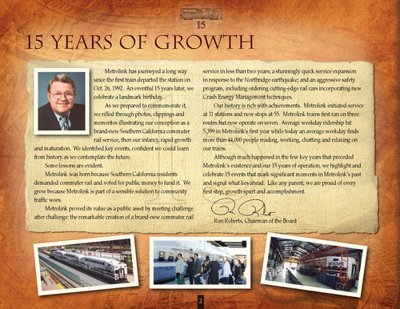

|

15 Years of Growth
Metrolink has journeyed a long way since the first train departed the station on Oct. 26, 1992. An eventful 15 years later, we celebrate a landmark birthday. As we prepared to commemorate it, we rifled through photos, clippings and mementos illustrating our conception as a brand-new Southern California commuter rail service, then our infancy, rapid growth and maturation. We identified key events, confident we could learn from history as we contemplate the future. Some lessons are evident. Metrolink was born because Southern California residents demanded commuter rail and voted for public money to fund it. We grow because Metrolink is part of a sensible solution to community traffic woes. Metrolink proved its value as a public asset by meeting challenge after challenge: the remarkable creation of a brand-new commuter rail service in less than two years; a stunningly quick service expansion in response to the Northridge earthquake; and an aggressive safety program, including ordering cutting-edge rail cars incorporating new Crash Energy Management techniques. Our history is rich with achievements. Metrolink initiated service at 11 stations and now stops at 55. Metrolink trains first ran on three routes but now operate on seven. Average weekday ridership hit 5,399 in Metrolink’s first year while today an average weekday finds more than 44,000 people reading, working, chatting and relaxing on our trains. Although much happened in the few key years that preceded Metrolink’s existence and our 15 years of operation, we highlight and celebrate 15 events that mark significant moments in Metrolink’s past and signal what lies ahead. Like any parent, we are proud of every first step, growth spurt and accomplishment.
Ron Roberts, Chairman of the Board
2
|